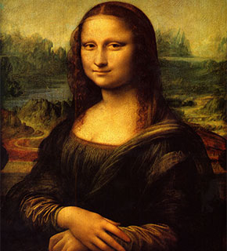

Obra de arte criada no período do Renascimento por Leonardo Da Vinci
16 de Set. de 2023A Mona Lisa é uma das mais famosas obra de arte do mundo. Ganhou destaque mundial por ter sido criada por uma importante figura história, Leonardo da Vinci, bem como por suas características, tanto no que diz respeito às concepções estéticas como ao conteúdo.
A Mona Lisa, ou Gioconda, encontra-se hoje no Museu do Louvre, em Paris, na Salle de la Joconde, protegida por um vidro e também por seguranças. O quadro mede 77 por 53 centímetros e, por questões de conservação, pode ser apreciado apenas através de um cordão que demarca o limite até onde o público pode se aproximar. A obra de Leonardo da Vinci é considerada a mais cara do mundo.

José Carlos
